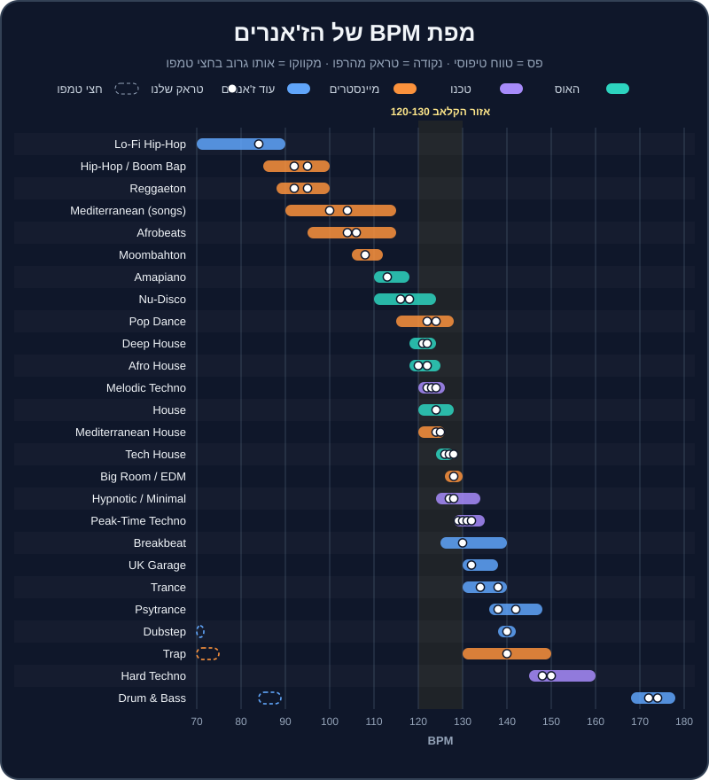

פרק 13 מתוך 20
תנ"ך הז'אנרים
The Genre Bible
24 ז'אנרים במקום אחד: טווח BPM, מבנה ופרייזים, צלילים מזהים, איך מערבבים כל אחד, אמנים ולייבלים, הסצנה בישראל — ואילו טראקים מהרפו ומאילו ארגזים לתרגל. העמקה מיוחדת בהאוס, טכנו, מיינסטרים וים-תיכוני.
"מה אתה מנגן?" — זו השאלה הראשונה שישאלו אתכם בכל בר, בכל פגישה עם זוג, ובכל שיחה עם פרומוטר. והתשובה "אני מנגן הכול" היא בדרך כלל התשובה הלא נכונה. כל ז'אנר הוא שפה: יש לו קצב משלו, משפטים באורך משלו, כלים מזהים, והרגלים של מיקס. DJ שמבין את השפה — יודע מתי מעבר של 64 תיבות הוא אמנות ומתי הוא שעמום, ומתי קאט של שנייה הוא חובה.
הפרק הזה הוא ספר עיון. אין צורך לקרוא אותו ברצף — קפצו לז'אנר שמעניין אתכם, הקשיבו לטראקים מהרפו, ופתחו את הארגז המתאים בתיקייה crates/. בז'אנרים האהובים עליכם — משפחת ההאוס, משפחת הטכנו, מיינסטרים, היפ-הופ וים-תיכוני — נעמיק יותר.
מה תלמדו בפרק#
- טווח ה-BPM, אורך הפרייז והמבנה הטיפוסי של כל ז'אנר.
- הצלילים שמזהים ז'אנר תוך שנייה.
- איך מערבבים כל ז'אנר: בלנדים ארוכים, Bass Swap, קאטים או דאבל-דרופים.
- אמנים ולייבלים מרכזיים (שמות אמיתיים, לחיפוש ולהאזנה).
- הערות על הסצנה הישראלית.
- אילו טראקים מהרפו ואילו ארגזים מ-
crates/מתאימים לתרגול.
מפת BPM#

טבלת סיכום#
| ז'אנר | BPM טיפוסי | פרייז / מבנה | סגנון מיקס | אצלנו | ארגז |
|---|---|---|---|---|---|
| Deep House | 118-124 | 8/16/32, אינטרו ארוך | בלנד ארוך | house-01, house-02 |
deep-house |
| House | 120-128 | 8/16/32 | בלנד, Bass Swap | house-03, house-04 |
house |
| Tech House | 124-128 | 8/16/32, לופים | Bass Swap, לופים | house-05 עד house-08 |
tech-house |
| Afro House | 118-125 | 16/32, פרקשן ארוך | ליירים ארוכים | house-09 עד house-11 |
afro-house |
| Nu-Disco | 110-124 | 8/16, שיר | בלנד זהיר | house-12, house-13 |
house |
| Amapiano | 110-118 | 8/16, אינטרו ארוך | בלנד, Bass Swap | house-14 |
afro-house |
| Peak-Time / Driving Techno | 128-135 | 16/32, התפתחות איטית | בלנד ארוך, EQ | techno-01 עד techno-04 |
techno |
| Melodic Techno | 120-126 | 16/32, ברייקדאון גדול | ברייקדאון לברייקדאון | techno-05 עד techno-08 |
melodic-techno |
| Hypnotic / Minimal | 124-134 | 32/64, חזרתי | ליירים ארוכים מאוד | techno-09, techno-10 |
techno |
| Hard Techno | 145-160 | 8/16, מהיר | קצר, קאטים | techno-11, techno-12 |
techno |
| Big Room / EDM | 126-130 | בילד-אפ ודרופ | מיקס בבילד-אפ, קאט | mainstream-01, mainstream-02 |
edm-festival |
| Pop Dance | 115-128 | בית/פזמון | אינטרו/אאוטרו, קאט | mainstream-03, mainstream-04 |
pop-dance |
| Hip-Hop / Trap | 85-100 / 130-150 | בית/פזמון | קאטים, Echo Out | mainstream-05 עד mainstream-07 |
hip-hop-rnb |
| Reggaeton | 88-100 | 8 תיבות, שיר | קאט על ה-1 | mainstream-08, mainstream-09 |
latin-reggaeton |
| Moombahton | 105-112 | 8/16 | גשר טמפו | mainstream-10 |
latin-reggaeton |
| Afrobeats | 95-115 | שיר | בלנד קצר | mainstream-11, mainstream-12 |
afrobeats |
| Mediterranean | 90-115 (שירים), 120-140 (רמיקסים) | שיר, מחרוזת | קאט, Echo, מחרוזת | mainstream-13 עד mainstream-16 |
mediterranean, israeli-party |
| Psytrance | 136-148 | 16/32, באס מתגלגל | Bass Swap מדויק | breadth-01, breadth-02 |
psytrance |
| Trance | 130-140 | 16/32, ברייקדאון אפי | בלנד ארוך, הרמוני | breadth-03, breadth-04 |
trance |
| Drum & Bass | 168-178 | 16/32 | מהיר, דאבל-דרופ | breadth-05, breadth-06 |
bass-music |
| Dubstep | 138-142 | 16, דרופים | החלפת דרופים | breadth-07 |
bass-music |
| UK Garage | 130-138 | 8/16, שאפל | ביטמאץ' זהיר | breadth-08 |
— |
| Breakbeat | 125-140 | 8/16 | יישור לפי סנר | breadth-09 |
— |
| Lo-Fi Hip-Hop | 70-90 | לופים קצרים | פייד פשוט | breadth-10 |
— |
חלק א' — משפחת ההאוס#
דיפ האוס — Deep House#
טמפו (BPM): 118-124 · פרייז: 8/16/32 · מיקס: בלנדים ארוכים · אצלנו:
house-01(Sunset Over Jaffa, 122, 8A),house-02(Velvet Rooftop, 121, 9A) · ארגז:crates/deep-house.md
מאיפה זה בא. דיפ האוס נולד בשיקגו ובניו ג'רזי באמצע שנות ה-80, כשמפיקים כמו לארי הרד (Larry Heard, בשם Mr. Fingers — "Can You Feel It", 1986) לקחו את ההאוס והוסיפו לו אקורדים של ג'אז וסול. מאז הוא עבר גלגולים: הסאונד הנשמתי של קרי צ'נדלר (Kerri Chandler) ושל מודימן (Moodymann), ועד הדיפ המלודי והאווירתי של הלייבל Anjunadeep ושל אמנים כמו בן בוהמר (Ben Böhmer).
הצליל. אקורדים "רכים" (ספטאקורדים ונונות), פסנתר חשמלי (Rhodes), באס עגול וחם, היי-האטים עדינים, לפעמים ווקאל נשמתי. האנרגיה נשארת נמוכה-בינונית: זה נעים, לא דוחף.
המבנה. אינטרו ארוך של 16-32 תיבות, כניסה הדרגתית של כלים כל 8 תיבות, ברייקדאון רך, ואאוטרו ארוך. מושלם ל-DJ.
איך מערבבים. כאן בלנדים של 32 ואפילו 64 תיבות הם אמנות. מאחר שיש הרבה אקורדים — הסולם חשוב (ראו פרק 10). EQ עדין: מורידים Mid של טראק אחד כשהאקורדים של השני נכנסים. אפקטים: מעט Reverb ו-Dub Echo.
בישראל. הפסקול של שקיעות על חוף הים, ברים על גגות בתל אביב ובית קפה בשישי בצהריים. אם יבקשו מכם לנגן "משהו נעים" בקבלת פנים — זה כנראה מה שהם מתכוונים אליו.
האוס — House#
טמפו (BPM): 120-128 · פרייז: 8/16/32 · מיקס: בלנד, Bass Swap · אצלנו:
house-03(Hands Up Florentin, 124, 7A),house-04(Piano Saturday, 124, 6A) · ארגז:crates/house.md
מאיפה זה בא. שיקגו, תחילת שנות ה-80. ה-DJ פרנקי נאקלס (Frankie Knuckles), "הסנדק של ההאוס", ניגן במועדון The Warehouse — ומשם, לפי הגרסה הנפוצה, השם "האוס". בניו יורק, לארי לבן (Larry Levan) במועדון Paradise Garage הוליד את סאונד ה"גראז'". קלאסיקות כמו "Move Your Body" של מרשל ג'פרסון (1986) הגדירו את הז'אנר. בשנות ה-90 וה-2000 — Masters At Work, הלייבל הבריטי Defected, ואינספור להיטי פסנתר.
הצליל. קיק על כל פעמה ("ארבע על הרצפה" — four-on-the-floor), קלאפ על 2 ו-4, היי-האט פתוח על ה"אנד" (בין הפעמות), פסנתר, ווקאל דיוות, דגימות דיסקו.
המבנה. אינטרו של תופים, כניסת באס (בטראקים שלנו — Hot Cue B בתיבה 17), בית/פזמון או לופים, ברייקדאון עם פסנתר או ווקאל, דרופ, אאוטרו.
איך מערבבים. Bass Swap על תחילת פרייז הוא המעבר הקלאסי. פסנתר מול פסנתר מתנגש מהר — הורידו את ה-Mid של היוצא. לטראקים ווקאליים — היכנסו כשהווקאל של הקודם נגמר.
בישראל. האוס הוא הבסיס של סצנת הלילה בתל אביב כבר עשורים — מהמועדונים, דרך מסיבות הגאווה (שם האוס "דיווה" ורמיקסים לזמרות פופ, בסגנון של DJs כמו עופר ניסים), ועד הברים.
טק האוס — Tech House#
טמפו (BPM): 124-128 · פרייז: 8/16/32 · מיקס: Bass Swap, לופים · אצלנו:
house-05(Groove Machine, 126, 8A),house-06(Bassline Bandit, 127, 7A),house-07(Warehouse 26, 128, 6A),house-08(Shuffle Theory, 126, 9A) · ארגז:crates/tech-house.md
מאיפה זה בא. בסוף שנות ה-90 בבריטניה התחילו לשלב את הגרוב של ההאוס עם המינימליזם והסאונד ה"מכני" של הטכנו. בעשור הקודם הז'אנר התפוצץ: לייבלים כמו Toolroom (מארק נייט), Hot Creations (ג'יימי ג'ונס), Dirtybird (קלוד פון-סטרוק), Solid Grooves (מייקל ביבי ו-PAWSA) ו-Catch & Release (פישר, FISHER). להיטים כמו "Losing It" של פישר (2018) ו-"Drugs From Amsterdam" של מאו פי (Mau P, 2023) הפכו את הטק האוס למיינסטרים של מועדונים ופסטיבלים. עוד שמות: כריס לייק (Chris Lake), ג'ון סאמיט (John Summit), קלוני (Cloonee).
הצליל. באסליין מתגלגל וקופצני (לרוב הכוכב של הטראק), היי-האטים עם "שאפל" (נדנוד קצבי), קלאפים יבשים, פרקשן, וקטעי ווקאל קצרים שחוזרים ("ווקאל הוק"). מעט אקורדים — הרבה גרוב.
המבנה. בנוי מלופים של 8 תיבות. אינטרו ארוך של תופים, כניסת באסליין, ברייקדאון קצר עם הווקאל, דרופ שמחזיר את הבאס. טראקים רבים בנויים במיוחד ל-DJs.
איך מערבבים.
- החלפת באס (Bass Swap) היא הכול. שני באסליינים מתגלגלים יחד = בלגן. מחליפים על ה-1 של פרייז (transition-02).
- לופים — לולאה של 4 או 8 תיבות של תופים מהאאוטרו קונה זמן.
- שני ווקאל הוקים יחד — אסור. חכו שאחד ייגמר.
- אפקטים: HPF + Roll לפני דרופ, Trans קצר, Delay של 3/4 על ההיי-האט.
- הסולם פחות קריטי מבדיפ האוס (פחות אקורדים), אבל הבאסליין טונלי — אז ±1 עדיין עדיף.
בישראל. אחד הז'אנרים הכי פופולריים במסיבות תל אביב כיום, ושפה משותפת לברים ולמועדונים. "גרוב טק האוסי" עובד גם בחלק השני של חתונה צעירה.
אפרו האוס — Afro House#
טמפו (BPM): 118-125 · פרייז: 16/32 · מיקס: ליירים ארוכים של פרקשן · אצלנו:
house-09(Desert Drums, 122, 4A),house-10(Kalimba Moon, 120, 5A),house-11(Spirit Dance, 122, 6A) · ארגז:crates/afro-house.md
מאיפה זה בא. השורשים בדרום אפריקה, ששם האוס הוא כמעט מוזיקת עם. ה-DJ והמפיק בלאק קופי (Black Coffee), שזכה בפרס גראמי ב-2022 על האלבום "Subconsciously", הוא השגריר הגדול של הז'אנר; לצידו קולואה דה סונג (Culoe De Song), דה קאפו (Da Capo), אנו נאפה (Enoo Napa) ושימזה (Shimza). בשנים האחרונות קם גל אירופי של "אפרו" — בעיקר הקולקטיב הברלינאי Keinemusik (&ME, Rampa, Adam Port), שהלהיט "Move" (2024) שלהם הפך ויראלי, והלייבל MoBlack.
הצליל. פרקשן פוליריתמי — קונגות, ג'מבה, שייקרים, תופי מרים — שכבות על שכבות. צ'אנטים ושירת "קריאה ותגובה", קלימבה ומרימבה, באס עמוק ומתגלגל, ולפעמים מלודיות כמעט מלודיק-טכנו.
המבנה. אינטרו ארוך מאוד של פרקשן, בנייה איטית, ברייקדאון עם צ'אנט, ודרופ שמחזיר את הבאס. פרייזים של 16 ו-32 תיבות.
איך מערבבים.
- ליירים של פרקשן — הכניסו את התופים של הטראק החדש מתחת לטראק הקודם, ותנו לשני הגרובים לחיות יחד 16-32 תיבות. זה הקסם של הז'אנר.
- הסולם חשוב — צ'אנטים, פדים ובאס טונלי. +2 עובד מצוין להרמה (transition-07: house-09 4A אל house-11 6A).
- אקולייזר (EQ): הרבה תדרים בתחום ה-Mid (קונגות) — הורידו Mid של אחד כשהשני מלא.
- אפקטים: Space ו-Dub Echo עדינים על צ'אנט.
בישראל. אפרו האוס הוא כנראה הסאונד הכי "חם" במסיבות בישראל בשנים האחרונות: שקיעות על החוף, מסיבות מדבר, ברים ומועדונים. גם מפיקים ישראלים פעילים בז'אנר (בארגז תמצאו, למשל, את ערן הרש). ובחתונות צעירות — סט אפרו בקבלת הפנים או בסבב השני הפך לבקשה נפוצה.
נו-דיסקו — Nu-Disco#
טמפו (BPM): 110-124 · פרייז: 8/16 · מיקס: בלנד זהיר · אצלנו:
house-12(Mirrorball Boulevard, 118, 8B),house-13(Funk Cruise, 116, 7B) · ארגז:crates/house.md
מאיפה זה בא. הדיסקו של שנות ה-70 (Chic ונייל רוג'רס, דונה סאמר וג'ורג'יו מורודר עם "I Feel Love" מ-1977) חזר בשנות ה-2000 כ"נו-דיסקו": רי-אדיטים של קלאסיקות, והפקות חדשות עם צליל רטרו. שמות: טוד טרייה (Todd Terje), פרפל דיסקו מאשין (Purple Disco Machine), דימיטרי פרום פריז (Dimitri From Paris), והלייבל Glitterbox.
הצליל. באס גיטרה "חי" ומלודי, גיטרות פאנק, כלי מיתר, קלאפ על 2 ו-4, היי-האט פתוח על ה"אנד". הרבה אקורדים — ובמז'ור.
איך מערבבים. שני באסליינים מלודיים יחד מתנגשים מהר — בלנד קצר יחסית, והסולם חשוב. ברי-אדיטים לרוב יש אינטרו של תופים; בהקלטות דיסקו ישנות הטמפו "חי" — כבו Sync והקשיבו.
בישראל. הצמד התל-אביבי Red Axes מוכר בעולם בסצנת הדיסקו, האינדי-דאנס והאדיטים. נו-דיסקו הוא בחירה מצוינת לחימום בבר, לקבלת פנים בחתונה, ולמסיבות "גרוב" בשישי.
אמאפיאנו — Amapiano#
טמפו (BPM): 110-118 (רוב הטראקים 112-115) · פרייז: 8/16 · מיקס: בלנד, Bass Swap · אצלנו:
house-14(Log Drum Lagoon, 113, 4A) · ארגז:crates/afro-house.md
מאיפה זה בא. נולד בטאונשיפים של חבל גאוטנג בדרום אפריקה באמצע העשור הקודם, והתפוצץ עולמית מסוף העשור. שמות: קבזה דה סמול (Kabza De Small), DJ מפוריסה (DJ Maphorisa), פוקליסטיק (Focalistic), אנקל וופלס (Uncle Waffles), והזמרת טיילה (Tyla), שהלהיט שלה "Water" זכה בגראמי הראשון בקטגוריית המוזיקה האפריקאית (2024).
הצליל. ה-log drum — באס הקשה, עמוק ו"מוקפץ", שהוא בעצם הכוכב — פסנתר ג'אזי, שייקרים, פדים אווריריים, וקריאות ווקאליות.
איך מערבבים. ה-log drum טונלי (יש לו גובה צליל) — אז Bass Swap ו-סולם חשובים. האינטרואים ארוכים ונוחים. אמאפיאנו הוא גשר טמפו מושלם: בין אפרוביטס (100-106) לאפרו האוס (120). פרטים בפרק 15.
בישראל. מופיע יותר ויותר בערבי אפרו ובמסיבות קיץ, לרוב כבלוק קצר בין אפרוביטס לאפרו האוס.
חלק ב' — משפחת הטכנו#
טכנו — Peak-Time ו-Driving Techno#
טמפו (BPM): 128-135 · פרייז: 16/32 · מיקס: בלנד ארוך, EQ, ליירים · אצלנו:
techno-01(Concrete Pulse, 130, 8A),techno-02(Industrial Heart, 131, 4A),techno-03(Strobe Ritual, 132, 7A),techno-04(Night Shift, 129, 6A) · ארגז:crates/techno.md
מאיפה זה בא. דטרויט, אמצע שנות ה-80: שלושה חברים מהפרבר בלוויל — חואן אטקינס (Juan Atkins), דריק מיי (Derrick May) וקווין סונדרסון (Kevin Saunderson) — לקחו מכונות תופים וסינתסייזרים ויצרו מוזיקה עתידנית וקרה. אחרי נפילת חומת ברלין, הטכנו מצא בית שני בברלין: המועדון Tresor (1991) ואחר כך Berghain. הטכנו של "שעת השיא" של היום — לייבלים כמו Drumcode (אדם בייר, Adam Beyer), KNTXT (שרלוט דה ויט, Charlotte de Witte) ו-Lenske (אמלי לנס, Amelie Lens), ושמות כמו אנריקו סנג'וליאנו (Enrico Sangiuliano).
הצליל. קיק עמוק ויבש על כל פעמה, "רמבל" (באס מהדהד מתחת לקיק), לופים של פרקשן, טקסטורות תעשייתיות, מעט מלודיה (לרוב סטאב או סינת' אחד). ה-"Driving" — ממוקד בתנועה קדימה; ה-"Peak-Time" — חזק יותר, עם בילד-אפים ודרופים.
המבנה. התפתחות איטית: כל 16 או 32 תיבות משהו נוסף או יוצא. ברייקדאון אחד או שניים. אינטרו ואאוטרו ארוכים.
איך מערבבים.
- בלנדים ארוכים של 32-64 תיבות, עם EQ: Low של אחד בלבד בכל רגע.
- ליירים — שני טראקים יחד הם "טראק שלישי". DJs של טכנו לפעמים מחזיקים שלושה ערוצים.
- לופים לקניית זמן ולבניית מתח (transition-06).
- הסולם פחות קריטי מבמלודיק, אבל ה"רמבל" טונלי — שימו לב בבלנדים ארוכים.
בישראל. סצנת טכנו ותיקה ואיתנה: מועדונים ומסיבות מחסן בתל אביב, ו-DJs ישראלים בשורה הראשונה בעולם — למשל שלומי אבר (Shlomi Aber) והלייבל שלו Be As One, וגיא גרבר (Guy Gerber) והלייבל Rumors.
מלודיק טכנו — Melodic Techno#
טמפו (BPM): 120-126 · פרייז: 16/32 · מיקס: ברייקדאון לברייקדאון, בלנדים ארוכים · אצלנו:
techno-05(Neon Cathedral, 122, 10A),techno-06(Afterglow Protocol, 123, 11A),techno-07(Event Horizon, 124, 9A),techno-08(Silent Orbit, 122, 8A) · ארגז:crates/melodic-techno.md
מאיפה זה בא. בעשור הקודם צמח ז'אנר שלקח את הקיק והגרוב של הטכנו והוסיף להם רגש: ארפג'יו, אקורדים במינור, וברייקדאונים קולנועיים. הלייבל Afterlife של הצמד האיטלקי Tale Of Us (נוסד ב-2016) והפרויקט Anyma הפכו אותו לתופעה עולמית; לצידם ARTBAT מאוקראינה, Adriatique משווייץ, Innellea, Massano, Mind Against, ולייבלים כמו Diynamic (סולומון, Solomun) ו-Innervisions (דיקסון ו-Âme). בחנות Beatport הקטגוריה נקראת "Melodic House & Techno".
הצליל. ארפג'יו של סינת' שמתפתח לאט, באס אנלוגי עבה, פדים רחבים, ריזרים, ולפעמים ווקאל רחוק ומהדהד. כמעט תמיד במינור.
המבנה. אינטרו ארוך, בנייה, ברייקדאון גדול באמצע (לפעמים דקה וחצי ויותר), דרופ אפי, ואאוטרו. פרייזים של 16 ו-32.
איך מערבבים.
- הסולם קריטי — הז'אנר כולו מלודיה. עבדו לפי Camelot (±1, +2).
- מברייקדאון לברייקדאון — היכנסו עם הטראק החדש כשהברייקדאון של הקודם מתחיל, כך שהדרופ החדש "יחליף" את הדרופ הישן (transition-10: techno-06 אל techno-07).
- מעבר פילטר — transition-03 (techno-05 אל techno-08).
- שני ארפג'יו יחד — רק אם הסולם תואם, ועם Mid מנוהל.
- אפקטים: Reverb ו-Spiral בברייקדאון, Echo Out של 2 פעמות.
בישראל. לישראל יש מסורת עשירה בסאונד מלודי-פרוגרסיבי: גיא ג'יי (Guy J) והלייבל Lost & Found, גיא מנצור (Guy Mantzur), סהר זי (Sahar Z) ואחרים. מלודיק טכנו ממלא מסיבות זריחה ומדבר, וגם "סוף ערב" בחתונות של קהל צעיר שאוהב אלקטרוני.
טכנו היפנוטי ומינימל — Hypnotic / Minimal#
טמפו (BPM): 124-134 · פרייז: 32/64 · מיקס: ליירים ארוכים מאוד · אצלנו:
techno-09(Infinite Loop, 128, 4A),techno-10(Micro Groove, 127, 5A) · ארגז:crates/techno.md
מאיפה זה בא. המינימל טכנו התגבש בשנות ה-90 — רוברט הוד (Robert Hood) מדטרויט, וריצ'י הוטין (Richie Hawtin, Plastikman) עם הלייבלים Plus 8 ו-M_nus. בשנות ה-2000 — ריקרדו וילאלובוס (Ricardo Villalobos) והמינימל הרומני (Raresh, Petre Inspirescu, Rhadoo). הטכנו ההיפנוטי — עמוק, דאבי וחזרתי — מזוהה עם שמות כמו דונאטו דוזי (Donato Dozzy), Rrose ואוסקר מולרו (Oscar Mulero).
הצליל. חזרתיות. לופ אחד שמשתנה מעט מאוד לאורך דקות, דאב, טקסטורות, פרקשן קטן ומדויק. המטרה היא "טראנס" של הגוף — לא דרופים.
איך מערבבים. הכי ארוך שיש: 64 תיבות ויותר, ליירים של שניים-שלושה טראקים, שינויים מיקרוסקופיים ב-EQ. אם הקהל שם לב למעבר — כנראה מיהרתם.
הארד טכנו — Hard Techno#
טמפו (BPM): 145-160 · פרייז: 8/16 · מיקס: מהיר, קאטים, לופים · אצלנו:
techno-11(Rave Engine, 148, 8A),techno-12(Overdrive 150, 150, 7A) · ארגז:crates/techno.md
מאיפה זה בא. לשורשים בשנות ה-90 (ה"שראנץ" הגרמני ועוד) הגיעה בעשור הנוכחי תחייה ענקית, עם אמנים כמו שרה לנדרי (Sara Landry), I Hate Models, 999999999 ו-Klangkuenstler. הטמפו עלה בהתמדה — והיום 150 ומעלה הוא דבר רגיל.
הצליל. קיק מעוות ו"שבור", רמבל מהיר, סטאבים של רייב שנות ה-90, אלמנטים מטראנס, ברייקים קצרים ואגרסיביים.
איך מערבבים. קצר וחד: 8-16 תיבות, קאטים על ה-1, לופים קצרים, החלפת דרופים. אנרגיה כל הזמן למעלה. הטמפו הגבוה מקשה על ביטמאץ' באוזן — הקיק מהיר — אז מקשיבים לסנר ולקלאפ.
חלק ג' — מיינסטרים, אירועים ומסיבות#
ביג רום — Big Room / EDM#
טמפו (BPM): 126-130 (בעיקר 128) · מבנה: בילד-אפ ודרופ · מיקס: מיקס בבילד-אפ, קאט על הדרופ · אצלנו:
mainstream-01(Festival Main Stage, 128, 4A),mainstream-02(Hands In The Sky, 128, 6A) · ארגז:crates/edm-festival.md
מאיפה זה בא. עידן הפסטיבלים של העשור הקודם — Tomorrowland, Ultra. מרטין גאריקס (Martin Garrix) עם "Animals" (2013), הארדוול (Hardwell) והלייבל Revealed Recordings, דימיטרי וגאס ולייק מייק, אפרוג'ק (Afrojack), W&W, ולייבלים כמו Spinnin' Records ו-STMPD.
הצליל. סינת'ים ענקיים, סנר רול שמאיץ, ריזרים, "צעקת" דרופ — לרוב לופ קצר ופשוט שכל הרחבה קופצת עליו.
המבנה. אינטרו, ברייק, בילד-אפ (8-16 תיבות של מתח), דרופ (16 תיבות), ברייק שני, בילד-אפ, דרופ. טראקים קצרים יחסית.
איך מערבבים. לא בלנדים ארוכים. הכניסו את הטראק הבא בזמן הבילד-אפ של הקודם, כך שהדרופ החדש ינחת על ה-1 (או קאט חד — transition-05). מאש-אפים (אקפלה של שיר אחד על דרופ של אחר) הם חלק מהסגנון.
בישראל. ביג רום הוא עדיין חלק בלתי נפרד מבר/בת מצווה, חתונות צעירות ומסיבות נוער. "קלאסיקות EDM" של העשור הקודם עובדות כמעט תמיד בסבב השני של אירוע.
פופ דאנס — Pop Dance#
טמפו (BPM): 115-128 · מבנה: בית/פזמון · מיקס: אינטרו/אאוטרו, קאט אחרי פזמון · אצלנו:
mainstream-03(Summer In Tel Aviv, 122, 8B),mainstream-04(Golden Hour, 124, 8A) · ארגז:crates/pop-dance.md
מאיפה זה בא. פופ רדיו עם ביט של מועדון: דייויד גואטה (David Guetta), קלווין האריס (Calvin Harris), רובין שולץ (Robin Schulz), ומאות להיטי רדיו. בישראל — נועה קירל, סטטיק ובן אל, נטע ואחרים (ראו crates/israeli-party.md).
הצליל. שיר לכל דבר — בית, פזמון, ברידג' — עם קיק ארבע על הרצפה ובאס של האוס. הווקאל הוא הכוכב.
איך מערבבים. גרסאות רדיו קצרות ומתחילות ישר בשירה — לא נוחות למיקס. DJs משתמשים ב"גרסה מורחבת" (Extended Mix) או ב"אדיט אינטרו" מספריות DJ (DJ pools). כלל ברזל: אל תערבבו שני ווקאלים. היכנסו בסוף הפזמון, או עשו קאט על ה-1.
היפ-הופ וטראפ — Hip-Hop / Trap#
טמפו (BPM): בום-באפ 85-100 · טראפ 130-150 (מורגש כ-65-75) · מבנה: בית/פזמון · מיקס: קאטים, Echo Out, משחקי מילים · אצלנו:
mainstream-05(Boom Bap Avenue, 92, 5A),mainstream-06(808 Skyline, 140, 4A),mainstream-07(Late Night Cypher, 95, 6A) · ארגז:crates/hip-hop-rnb.md
מאיפה זה בא. ברונקס, ניו יורק, 1973: ה-DJ קול הרק (DJ Kool Herc) ניגן שני עותקים של אותו תקליט ב"מסיבת בלוק" וחזר שוב ושוב על ה"ברייק" — הקטע שבו רק התופים מנגנים. גרנדמאסטר פלאש (Grandmaster Flash) הפך את זה לטכניקה מדויקת. משם: הבום-באפ של שנות ה-90 (המפיקים DJ Premier ו-Pete Rock), והטראפ מאטלנטה של שנות ה-2000, עם 808 רועם והיי-האטים מהירים, והמפיקים של היום כמו מטרו בומין (Metro Boomin).
הצליל. - בום-באפ: קיק וסנר "שמנים", דגימות סול וג'אז, סווינג. - טראפ: 808 ארוך (באס-קיק), היי-האטים ב"גלגולים" מהירים, סנר על פעמה 3 של חצי-טמפו. טראפ ב-140 נספר לעיתים כ-70.
איך מערבבים.
- קצר. 8-16 תיבות, או קאט על ה-1. בהיפ-הופ ה-DJ "קופץ" בין להיטים.
- יציאה עם Echo Out על המילה האחרונה של משפט — המעבר הקלאסי של Open Format.
- משחקי מילים — שיר שמסתיים במילה שהשיר הבא מתחיל בה.
- סקרץ', Backspin, ו-Trans קצר — חלק מהשפה.
- גרסאות "Clean" (בלי קללות) — חובה באירועים משפחתיים.
- חצי/כפול טמפו — טראפ ב-140 מתחבר לדאבסטפ ב-140, והיפ-הופ ב-87 לדראם אנד בייס ב-174.
בישראל. להיפ-הופ הישראלי מסורת של שלושה עשורים — מהדג נחש וסאבלימינל ועד רביד פלוטניק, טונה וג'ימבו ג'יי — ולצידו שפע של היפ-הופ ו-R&B אמריקאי במסיבות. בחתונות — בלוק היפ-הופ/R&B בסבב השני הוא כמעט סטנדרט.
רגאטון — Reggaeton#
טמפו (BPM): 88-100 (בעיקר 90-96) · פרייז: 8 תיבות, שיר · מיקס: קאט על ה-1, Echo Out · אצלנו:
mainstream-08(Dembow Fuego, 95, 8A),mainstream-09(Perreo Nocturno, 92, 7A) · ארגז:crates/latin-reggaeton.md
מאיפה זה בא. פנמה ופוארטו ריקו של שנות ה-90: "רגאיי בספרדית" פגש את ההיפ-הופ. הקצב, ה-dembow, קיבל את שמו מהשיר "Dem Bow" של שאבה ראנקס (1990). "Gasolina" של דדי יאנקי (2004) פרץ לעולם, והיום באד באני (Bad Bunny), ג'יי באלווין (J Balvin) וקרול ג'י (Karol G) הם מהאמנים הנשמעים בעולם.
הצליל. קיק על כל פעמה, וסנר/רים בתבנית המפורסמת של ה-dembow ("בום — צ'יק — בום-צ'יק"), באס פשוט, ווקאל קצבי.
איך מערבבים. כמו היפ-הופ: קאטים על ה-1 אחרי פזמון, Echo Out, בלנדים קצרים על אינטרו של תופים. הסולם פחות חשוב בקאטים. רגאטון ← מומבהטון ← האוס הוא מסלול טמפו קלאסי (ראו פרק 15).
בישראל. "סט לטיני" הוא חובה כמעט בכל חתונה ובכל מסיבה מיינסטרימית — ולהיטי רגאטון ממלאים רחבות בכל גיל.
מומבהטון — Moombahton#
טמפו (BPM): 105-112 (בעיקר 108-110) · פרייז: 8/16 · מיקס: גשר טמפו · אצלנו:
mainstream-10(Moombah Heat, 108, 9A) · ארגז:crates/latin-reggaeton.md
מאיפה זה בא. וושינגטון, 2009: ה-DJ דייב נאדה (Dave Nada) ניגן במסיבה עם קהל של רגאטון, והאט רמיקס של האוס הולנדי מ-128 ל-108 — וגילה שזה עובד. כך נולד ז'אנר שלם, ש-Major Lazer ו-Diplo הפכו לפופולרי.
איך מערבבים. זה הגשר הטבעי בין רגאטון (95) להאוס (124-128) — ראו "סולם הז'אנרים" בפרק 15.
אפרוביטס — Afrobeats#
טמפו (BPM): 95-115 (בעיקר 100-110) · מבנה: שיר · מיקס: בלנד קצר על פרקשן · אצלנו:
mainstream-11(Lagos To Haifa, 104, 9B),mainstream-12(Sunshine Riddim, 106, 10B) · ארגז:crates/afrobeats.md
מאיפה זה בא. ניגריה וגאנה, שנות ה-2000 וה-2010 (לא להתבלבל עם ה-Afrobeat של פלה קוטי משנות ה-70). ברנה בוי (Burna Boy), וויזקיד (Wizkid, "Essence" עם טמס), דווידו (Davido), רמה (Rema, "Calm Down"), טמס (Tems) ואיירה סטאר (Ayra Starr) הפכו אותו לסאונד עולמי.
הצליל. פרקשן מסונכפ וקליל, גיטרות, באס מקפץ, מלודיות ווקאליות חמות — הרבה פעמים במז'ור.
איך מערבבים. בלנדים קצרים-בינוניים על קטעי פרקשן, ומעבר בסוף פזמון. מתחבר טבעי לאמאפיאנו ולאפרו האוס (מדרגות טמפו), ולרגאטון ודאנסהול.
ים-תיכוני ומזרחי — Mediterranean#
טמפו (BPM): שירים 90-115 · רמיקסים ו"מזרחית קצבית" 120-140 · מבנה: שיר, מחרוזת · מיקס: קאטים, Echo Out, מחרוזות · אצלנו:
mainstream-13(Darbuka Nights, 100, 9A),mainstream-14(Hijaz Fire, 104, 8A),mainstream-15(Mediterranean Sunrise, 124, 7A),mainstream-16(Oud Club, 125, 6A),practice-15(גשר טמפו 100) · ארגזים:crates/mediterranean.md,crates/israeli-party.md,crates/wedding-essentials.md
זה הז'אנר שהכי ישפיע על הפרנסה שלכם כ-DJ אירועים בישראל — ולכן נעמיק.
מאיפה זה בא. "ים-תיכוני" בישראל הוא מפגש של כמה עולמות:
- המוזיקה המזרחית הישראלית — מהקלטות שנמכרו סביב התחנה המרכזית הישנה בתל אביב בשנות ה-70 וה-80, דרך זוהר ארגוב ("הפרח בגני", 1982) וחיים משה, ועד הדור של אייל גולן ושרית חדד, ועומר אדם, עדן בן זקן ומשה פרץ של היום.
- השפעות יווניות — בוזוקי, ריקודי שורות, ו"זורבה" של מיקיס תיאודורקיס שכל אולם מכיר.
- השפעות ערביות וטורקיות — דרבוקה, עוד, קאנון, מקאמים, ולהיטים של עמרו דיאב וטרקן.
- רמיקסים למועדון — להיטים ים-תיכוניים עם ביט של האוס ב-124-140, ו"אוריינטל האוס" — מלודיות מזרחיות מעל גרוב קלאב (כמו mainstream-15 ו-mainstream-16).
הצליל. - מקצבים: המקצוּם / בלדי ("דום-תק-תק-דום-תק"), צ'יפטטלי, ומקצבי 4/4 של פופ. הדרבוקה היא הלב. - סולמות: מקאם חיג'אז (עם ה"קפיצה" המזרחית האופיינית בין הצליל השני לשלישי) הוא הצליל הכי מזוהה. מקאמים אחרים משתמשים ברבעי טונים — שאין להם מקום בגלגל Camelot. - כלים: עוד, בוזוקי, כינור, קאנון, אקורדיון, סינת'ים "מזרחיים", וקולות עם סלסולים.
המבנה. שירים, לא טראקים של DJ: הקדמה כלית קצרה, בית, פזמון, ולפעמים סולו כלי. אורך משפט של 8 תיבות, אבל הרבה פעמים לא סימטרי לגמרי.
איך מערבבים.
1. קלאסיקות עם טמפו "חי" — שירים ישנים הוקלטו עם תזמורת, והטמפו נושם ומשתנה. כבו Sync, ואל תנסו ביטמאץ' ארוך. קאט, פייד, או מעבר בסוף שיר.
2. מחרוזת — בלוק של 10-20 דקות שבו מנגנים בעיקר פזמונים, בקאטים מהירים. הקהל שר — אתם רק "מגישים" את השיר הבא.
3. נקודת Hot Cue על כניסת הפזמון — כדי לקפוץ אליו בקאט.
4. יציאה עם Echo Out על הצליל האחרון של שיר, ואז הרמיקס הבא על ה-1.
5. מעבר מהעולם של 100 לעולם של 124 — הרגע החזק של הערב: פזמון של להיט ים-תיכוני, Echo Out, ורמיקס האוס שמתפוצץ. זה בדיוק transition-08 ו-practice-15.
6. זיהוי הסולם — לא אמין במקאמים. שיר בחיג'אז עלול להיות מזוהה בסולם "שגוי" לחלוטין. האוזן קובעת.
בישראל. זה הלב של תעשיית האירועים: חתונות, בר מצוות, חינות, ימי הולדת. ברוב החתונות יש לפחות שני בלוקים ים-תיכוניים, ולעיתים קרובות הסבב השלישי כולו מזרחית. ורמיקסים ים-תיכוניים נשמעים גם במועדונים, בעיקר במסיבות מיינסטרים.
חלק ד' — עוד עולמות#
פסיכדלי טראנס — Psytrance#
טמפו (BPM): 136-148 (פרוגרסיב 134-140, פול-און 143-148) · פרייז: 16/32 · מיקס: Bass Swap מדויק, בלנדים ארוכים · אצלנו:
breadth-01(Goa Gateway, 142, 11A),breadth-02(Forest Frequency, 138, 7A) · ארגז:crates/psytrance.md
מאיפה זה בא. חופי גואה בהודו, סוף שנות ה-80 ותחילת ה-90 — "גואה טראנס" — שהתפתח לפסיכדלי טראנס. ישראל היא אחת המעצמות העולמיות של הז'אנר: אינפקטד מאשרום (Infected Mushroom), אסטריקס (Astrix), וויני וויצ'י (Vini Vici), אייס ונטורה (Ace Ventura), סקאזי (Skazi) וקפטן הוק (Captain Hook) מנגנים בפסטיבלים הגדולים בעולם, כמו Boom בפורטוגל ו-Ozora בהונגריה.
הצליל. באס מתגלגל בשש-עשריות ("קיק-באס-באס-באס"), לידים חומציים, אפקטים פסיכדליים, ובילד-אפים ארוכים. הפרוגרסיב איטי ועמוק יותר; הפול-און מהיר ושמח יותר.
איך מערבבים. שני באסים מתגלגלים יחד = אסון. ה-Bass Swap חייב להיות מדויק על ה-1 של פרייז. אחרי זה — בלנדים ארוכים עם EQ, ולפעמים "דרופ על דרופ".
בישראל. "מסיבות טבע" הן מוסד ישראלי, וטראנס הוא גם חלק קבוע מסוף הערב בחתונות — בלוק לצעירים כשרוב האורחים המבוגרים כבר הלכו. הסצנה ספגה מכה קשה בטבח במסיבת נובה ב-7 באוקטובר 2023, והקהילה ממשיכה לחיות, לזכור ולרקוד.
טראנס — Trance#
טמפו (BPM): 130-140 (אפליפטינג 136-140, פרוגרסיב טראנס 128-134) · פרייז: 16/32 · מיקס: בלנד ארוך, ברייקדאון לברייקדאון · אצלנו:
breadth-03(Euphoria Coast, 138, 8A),breadth-04(Starlight Drive, 134, 9A) · ארגז:crates/trance.md
מאיפה זה בא. גרמניה של תחילת שנות ה-90, והתפוצצות עולמית בסוף העשור ובשנות ה-2000. ארמין ואן ביורן (Armin van Buuren, הלייבל Armada ותוכנית הרדיו A State Of Trance), אבוב אנד ביונד (Above & Beyond, Anjunabeats), פול ואן דייק (Paul van Dyk), פרי קורסטן (Ferry Corsten), וטייסטו (Tiësto) בתחילת דרכו.
הצליל. אקורדי "סופר-סו" ענקיים, ארפג'יו, ברייקדאונים אפיים עם מלודיה רגשית, ובילד-אפים שמסתיימים ב"שחרור" אופורי.
איך מערבבים. הכול מלודיה — הסולם קריטי. בלנדים ארוכים, ומעבר מברייקדאון לברייקדאון.
דראם אנד בייס — Drum & Bass#
טמפו (BPM): 168-178 (בעיקר 172-175) · פרייז: 16/32 · מיקס: מהיר, דאבל-דרופ · אצלנו:
breadth-05(Liquid Velocity, 174, 4A),breadth-06(Rain On Neon, 172, 5A) · ארגז:crates/bass-music.md
מאיפה זה בא. בריטניה, תחילת שנות ה-90, מתוך הג'אנגל. גולדי (Goldie, הלייבל Metalheadz), LTJ Bukem (Good Looking), אנדי סי (Andy C, RAM Records), Hospital Records, צ'ייס אנד סטטוס, נטסקי וסאב פוקוס. ה"ליקוויד" (כמו Calibre) — רך ומלודי יותר.
הצליל. ברייקביטים מהירים (כמו ה-Amen break המפורסם), סאב-באס עמוק, באס "ריס" מתפתל.
איך מערבבים. מהר: בלנדים קצרים, קאטים, ו"דאבל-דרופ" — שני דרופים יחד בדיוק על ה-1 (רק בסולם תואם!). ב-174 כל פעמה היא בדיוק חצי פעמה של היפ-הופ ב-87.
דאבסטפ — Dubstep#
טמפו (BPM): 138-142 (מורגש כ-70) · פרייז: 16 · מיקס: החלפת דרופים · אצלנו:
breadth-07(Wobble Tectonics, 140, 4A) · ארגז:crates/bass-music.md
מאיפה זה בא. דרום לונדון, תחילת שנות ה-2000: סקרים (Skream), בנגה (Benga), Digital Mystikz (מאלה וקוקי), והערב FWD>>. אחר כך — ה"ברוסטפ" האמריקאי של סקרילקס (Skrillex) ואקסיז'ן (Excision).
הצליל. חצי-טמפו: סנר על הפעמה ה-3, סאב-באס, ו"וובל" — באס שמתנדנד.
איך מערבבים. החלפת דרופים, "ריוויינד" (rewind), מעברים קצרים. מתחבר טבעי לטראפ ב-140.
יו-קיי גראז' — UK Garage#
טמפו (BPM): 130-138 · פרייז: 8/16 · מיקס: ביטמאץ' זהיר · אצלנו:
breadth-08(2-Step Underground, 132, 6A)
מאיפה זה בא. בריטניה של סוף שנות ה-90, בהשראת הגראז' האמריקאי (טוד אדוארדס, Todd Edwards). ה-"2-Step" — קיק שלא על כל פעמה, שאפל קופצני. "Re-Rewind" של Artful Dodger וקרייג דייוויד (1999), MJ Cole, ותחייה בשנים האחרונות עם Interplanetary Criminal, Sammy Virji ו-Conducta.
איך מערבבים. השאפל והקיקים ה"חסרים" מקשים על ביטמאץ' באוזן — הקשיבו לסנר ולהיי-האט. מתחבר להאוס מהיר ולברייקס.
ברייקביט — Breakbeat#
טמפו (BPM): 125-140 · פרייז: 8/16 · מיקס: יישור לפי הסנר · אצלנו:
breadth-09(Breakdance Theory, 130, 7A)
מאיפה זה בא. "ברייקים" — קטעי תופים מתקליטי פאנק וסול (כמו "Funky Drummer" של ג'יימס בראון, וה-Amen break מהשיר "Amen, Brother" של The Winstons). בסוף שנות ה-90 — ה-"Big Beat" של פאטבוי סלים, הכימיקל ברדרס והפרודיג'י, ואחר כך ה-"Nu Skool Breaks" (Plump DJs, Stanton Warriors).
איך מערבבים. אין קיק על כל פעמה — יישרו לפי הסנר (2 ו-4) וספרו פרייזים. ברייקס הוא גשר נהדר בין האוס/טכנו לבין DnB וגראז'.
לו-פיי — Lo-Fi Hip-Hop#
טמפו (BPM): 70-90 · מבנה: לופים קצרים · מיקס: פייד פשוט · אצלנו:
breadth-10(Rainy Studio, 84, 7B)
מאיפה זה בא. בהשראת J Dilla ו-Nujabes, והפך לתופעה ביוטיוב בעשור הקודם (שידורי "ביטים ללמידה" כמו Lofi Girl).
הצליל. תופים "מאובקים", רעש ויניל, אקורדי ג'אז, סווינג, פילטר שמעמעם את הגבוהים.
איך מערבבים. פשוט: פייד ארוך או קאט עדין. מתאים לרקע, לבית קפה, לקבלת פנים שקטה, או ל"אפטר" של סוף הלילה.
הסצנה בישראל — מפה מהירה#
| עולם | מה מנגנים | איפה | מה זה דורש מכם |
|---|---|---|---|
| חוף וגגות | דיפ, אפרו, נו-דיסקו, מלודיק | ברים, שקיעות, קבלות פנים | בלנדים ארוכים, טעם, סבלנות |
| מועדונים ומחסנים | טק האוס, טכנו, הארד טכנו | תל אביב ומרכז, בעיקר חמישי-שישי | ביטמאץ' מדויק, ניהול אנרגיה לשעות |
| טבע ופסטיבלים | פסיכדלי טראנס, פרוגרסיב, מלודיק | מסיבות טבע, פסטיבלים | Bass Swap מדויק, סטים ארוכים |
| אירועים | Open Format: ים-תיכוני, ישראלי, לועזי, היפ-הופ, לטיני, EDM, טראנס | חתונות, בר/בת מצוות, אירועי חברה | גמישות, MC, קריאת קהל רב-גילאי |
| מיינסטרים ומסיבות | פופ, רמיקסים מזרחיים, רגאטון, היפ-הופ | ברים, מועדונים, מסיבות סטודנטים | מעברים מהירים, להיטים |
תרגילים#
סיכום#
- כל ז'אנר הוא שפה: טמפו, אורך פרייז, צלילים, והרגלי מיקס.
- משפחת ההאוס והטכנו (120-135): בלנדים ארוכים, Bass Swap, ובמלודיק — הסולם קריטי.
- מיינסטרים, היפ-הופ, רגאטון וים-תיכוני: שירים, לא טראקים של DJ — קאטים, Echo Out, מחרוזות, וכבוד לפזמון.
- ים-תיכוני בישראל הוא עולם בפני עצמו: טמפו חי, מקאמים, מחרוזות, והקפיצה הגדולה לרמיקס של 124.
- הארגזים ב-
crates/הם המשך טבעי של הפרק — מכאן בונים ספרייה חוקית.
בפרק הבא ניקח את כל זה לעולם האמיתי של ישראל: אירועים וחתונות — המבנה, הלקוח, המיקרופון, והציוד. ← פרק 14: אירועים וחתונות